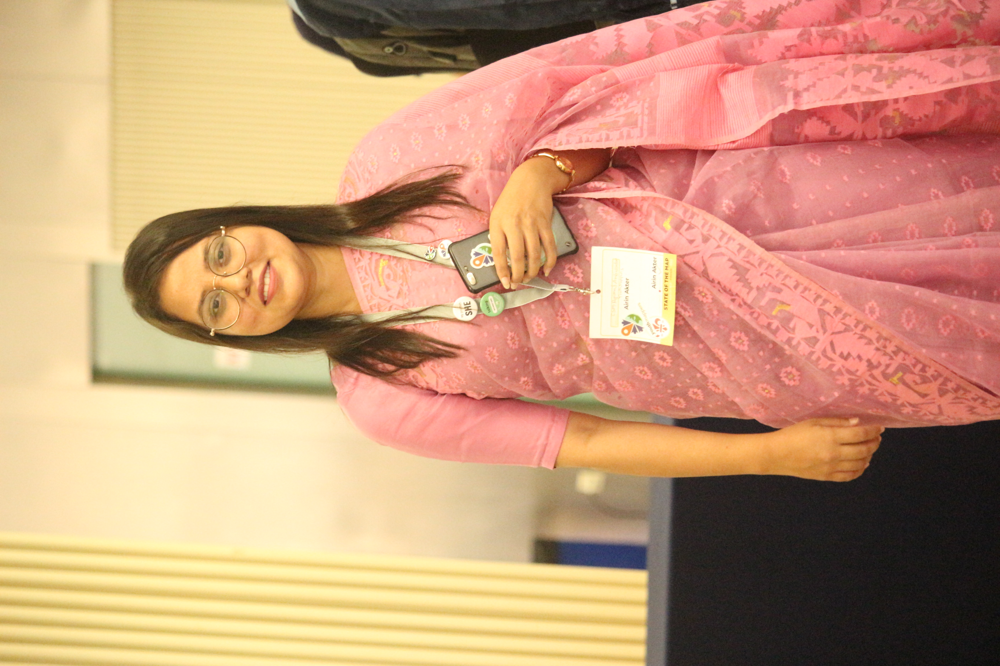

Add your photo

Airin Akter
PhD Candidate in Geography, University of Florida
I study where and how rain falls around tropical cyclones, especially storms that reach land in the North Indian Ocean. I use satellite rainfall data and weather reanalysis to understand what shapes these rainfall patterns.
Before my PhD, I worked in GIS and humanitarian mapping in Bangladesh, including community mapping for cyclone evacuation plans for women.
News
- Dec 2026: I will present a poster at the AGU Annual Meeting in San Francisco.
- Oct 2026: Launched my personal website.
- Jul 2026: Joined the NSF NCAR CELCIUS Graduate Visitor Program in Boulder, Colorado.
Contact
Department of Geography, University of Florida
Gainesville, Florida, USA
Email: akter.a@ufl.edu or airinuf@gmail.com